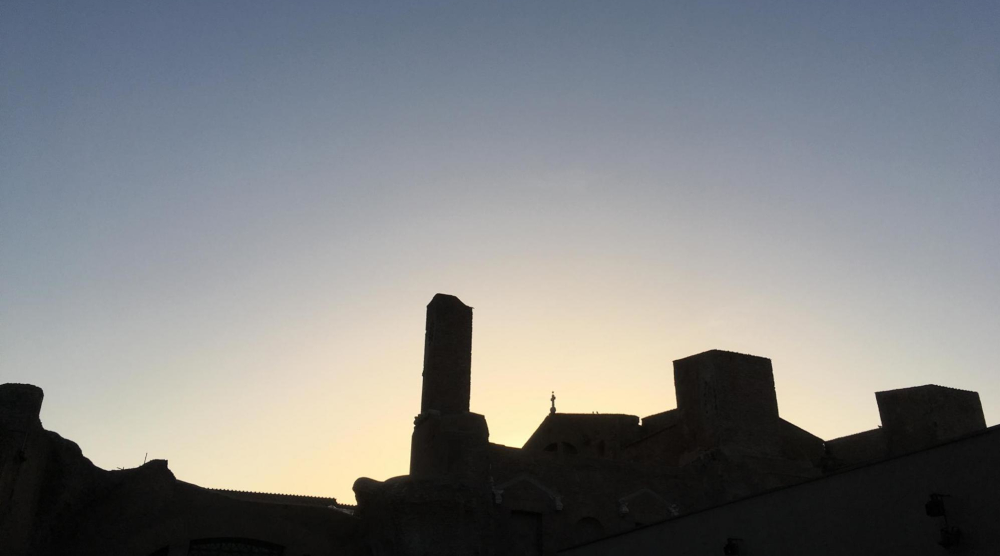
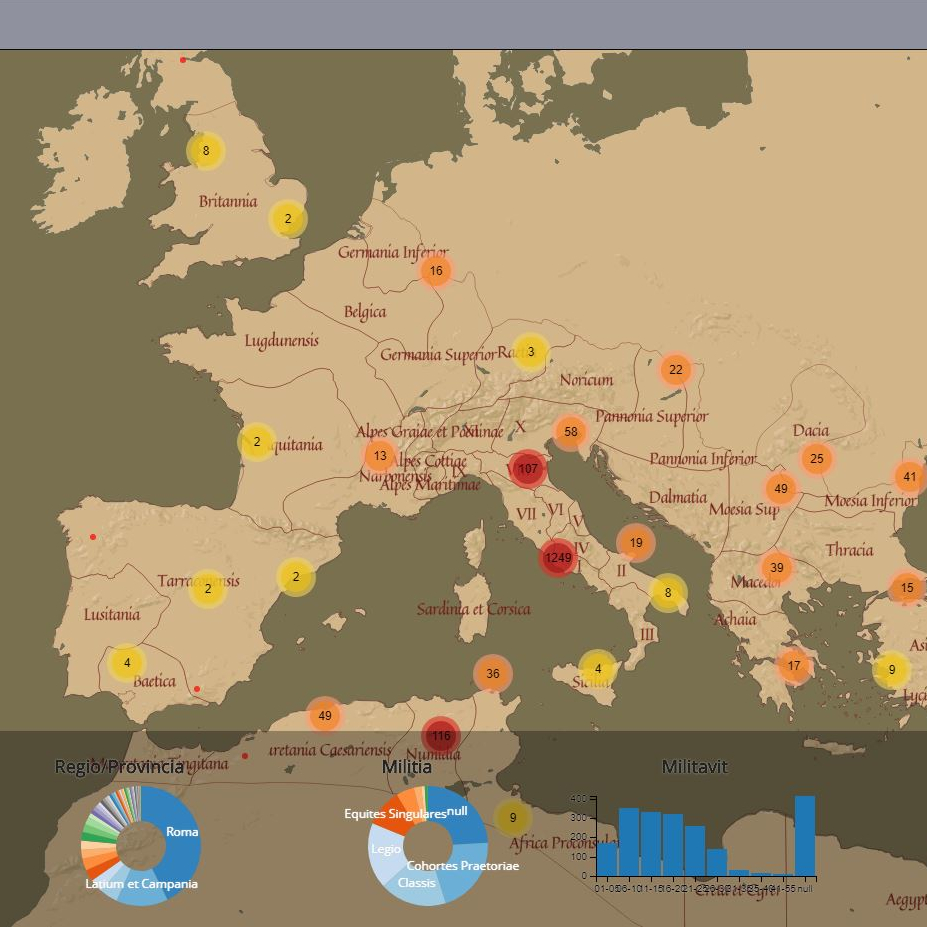
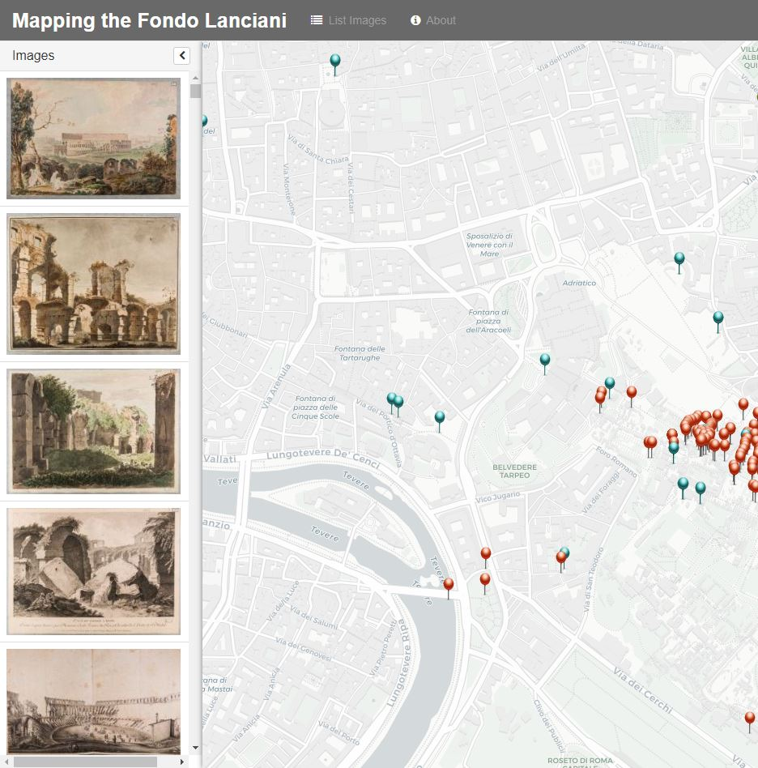
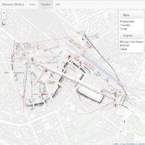
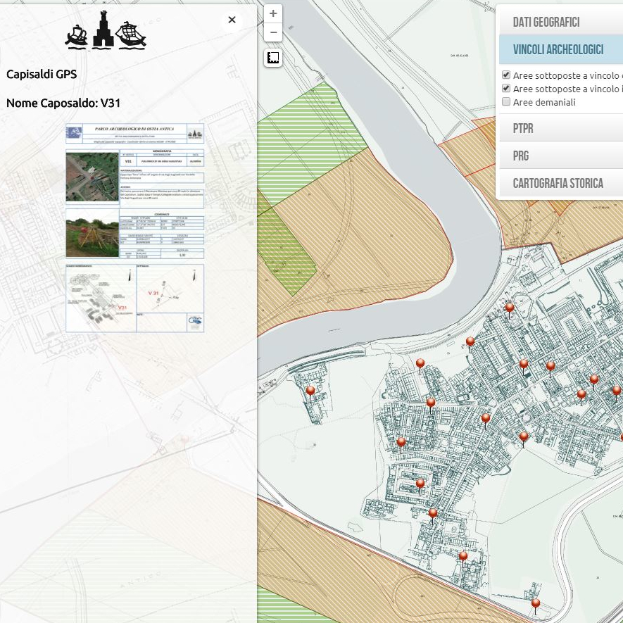
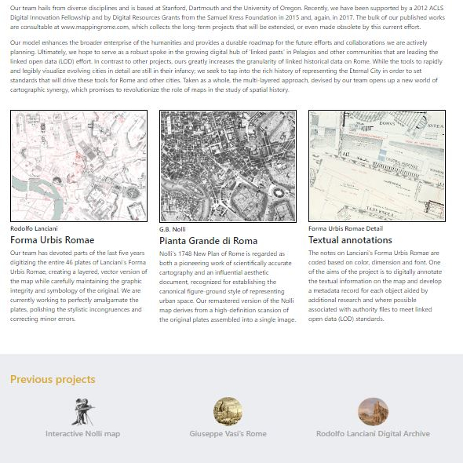
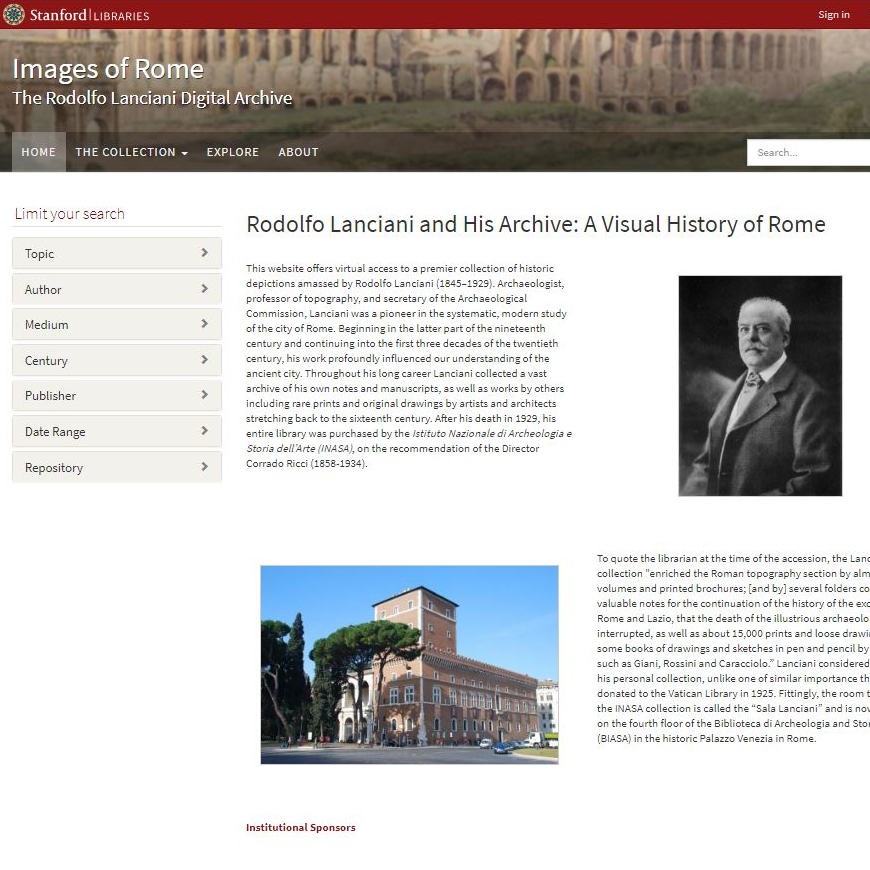
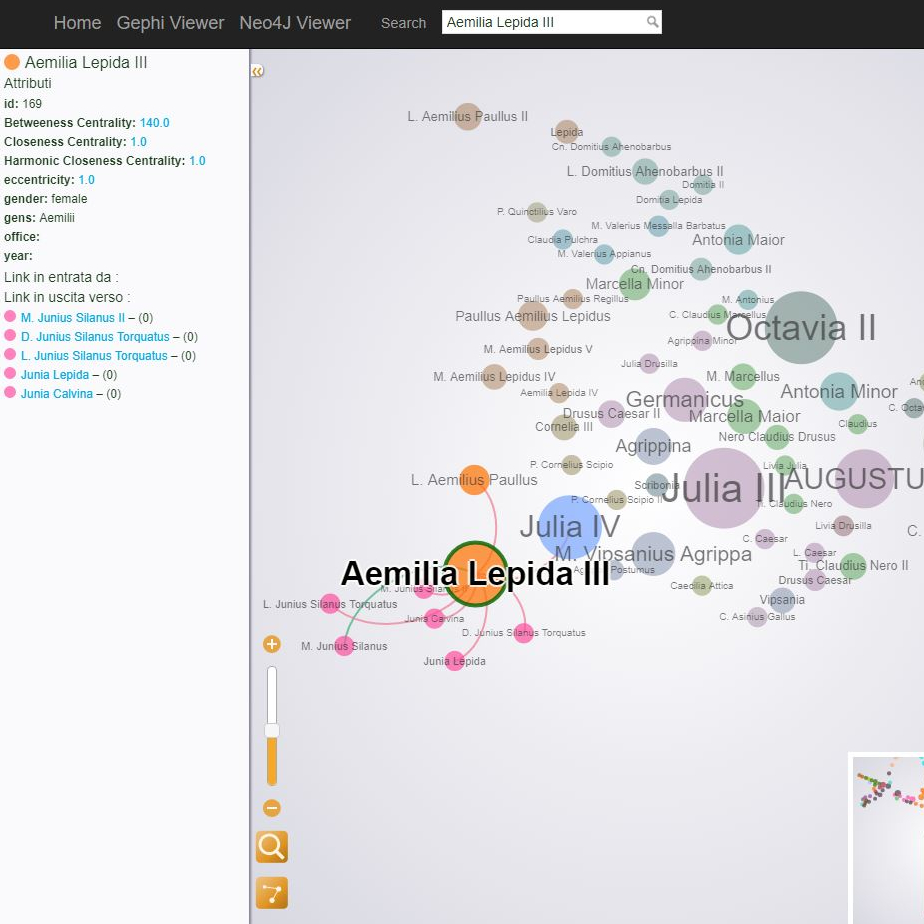
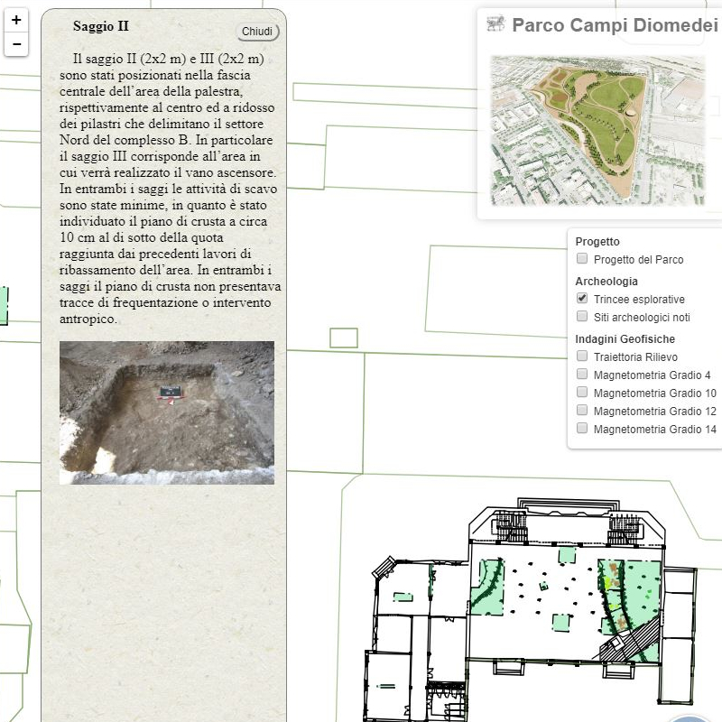
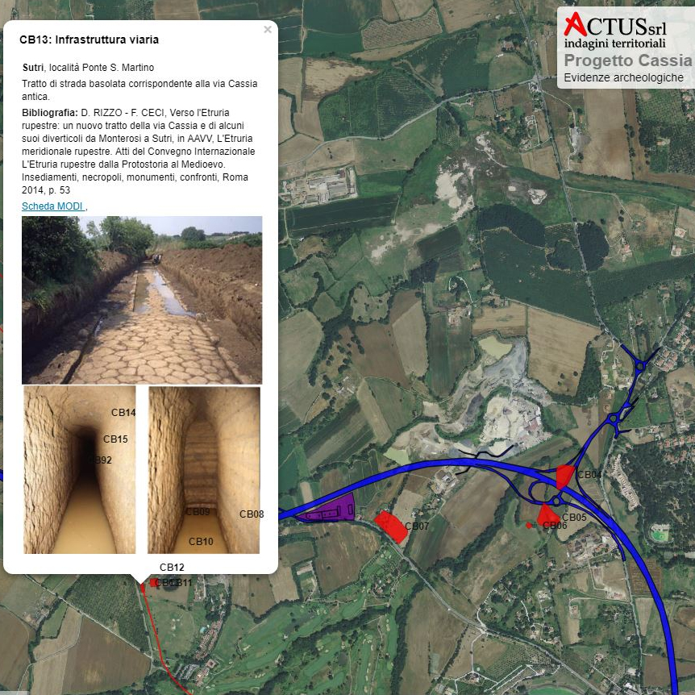

Portfolio
Giovanni Svevo

EpiData
Data visualization tool for Latin inscriptions

Mapping Lanciani
Visual approach to an online collection

Minerva Medica
WebGIS of an archaeological area

Ostia Antica
Interactive map for administrative data

Open Rome
Team portfolio for the Open Rome project

Images of Rome
Virtual access to Fondo Lanciani collection

Gentes
Mapping relationships among Roman aristocracy with Neo4J

Campi Diomedei
An archaeological webGIS

Via Cassia
Web tool to manage archaeological risk